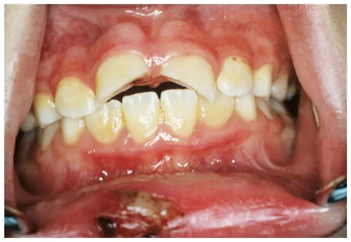

نسخه استخراجشده؛ ترجمه یا تأیید علمی انجام نشده است. وضعیت: captured
خانم ۲۴ سالهای که صرع دارد، وسط جرمگیری میگوید «بوی عجیبی میآید». چند ثانیه بعد فریادی میکشد، بدنش خشک میشود و چشمهایش بالا میرود. بعد دست و پایش شروع به پرش میکند. اولین فکرت چیست؟
این تشنج تونیکـکلونیک (grand mal) است؛ شدیدترین شکل صرع که در مطب میبینی.
خود حمله معمولاً کمتر از یک دقیقه، و حداکثر چند دقیقه، طول میکشد.
هر تشنجی صرع نیست. سنکوپ طولانی، مسمومیت با بیحسی موضعی، هیپوگلیسمی، هایپرونتیلاسیون، سکتهی مغزی و قطع الکل هم تشنج میدهند. در بیمار صرعی، شایعترین زمینه نخوردن دارو است.
هیچ چیز لای دندانها نگذار. گذاشتن آبسلانگ یا بایت بلاک وسط تشنج خطرناک است: دندان میشکند، بافت نرم پاره میشود و شکستهها ممکن است به راه هوایی بروند.

دهان را برای دندان شکسته یا پروتز شکسته بگرد؛ اگر تکهای پیدا نشد، رادیوگرافی قفسهی سینه لازم است. آن روز درمان را ادامه نده. بیمار هوشیار یک ساعت در مطب بماند و با همراه برود؛ بیمار بیهوش با ۱۱۵ منتقل شود. در هر دو حال به پزشک بیمار خبر بده تا دربارهی بررسی بیشتر و ادامهی درمان دندانپزشکی سرپایی تصمیم بگیرد.